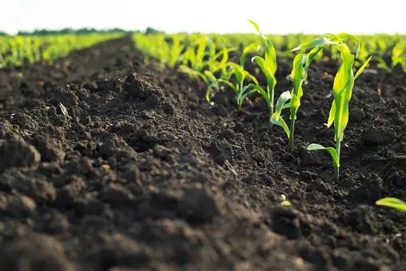
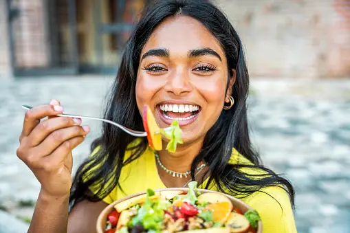

What Do We Offer to our customers

Naturally yours, from soil to soul

Beyond fresh-It's Organic

Let's make the world healthy
organic farming offers farmers not only economic benefits but also opportunities to promote environmental sustainability, improve soil health, and contribute to healthier food systems.
Organic produce often commands premium prices in the market due to consumer demand for healthier and sustainably produced food. This can lead to increased profitability for farmers, offsetting potential higher production costs associated with organic farming practices.
Organic farming methods focus on enhancing soil fertility and structure through practices like crop rotation, cover cropping, and organic amendments like compost. Healthy soil not only supports better crop yields but also reduces the need for synthetic fertilizers and pesticides, saving costs in the long run.
Organic farming promotes environmentally friendly practices such as reduced chemical inputs, conservation of water and biodiversity, and the use of renewable resources. By adopting organic methods, farmers contribute to long-term environmental sustainability and resilience against climate change impacts.

India.gov.in is the official website of the Government of India. It serves as a central hub for various government departments, ministries, and agencies, providing information about government services, schemes, policies, and initiatives. Users can access a wide range of resources,
VISIT
"Thrive Market is an online marketplace offering
healthy and sustainable products. With a focus on
organic groceries, clean beauty, and eco-friendly
items, it provides members exclusive discounts on a
wide range of products. Thrive Market's mission includes
promoting health, sustainability, and community engagement
through its membership-based platform."
In addition to its product offerings, Thrive Market also
emphasizes community engagement and social impact. The
website features educational resources, recipes, and content
to empower and inspire members to live healthier and more
sustainable lifestyles. Furthermore, Thrive Market is
committed to giving back through its Thrive Gives initiative,
which provides free memberships to low-income families,
veterans, and teachers, making healthy living accessible
to more people.
Fresh Direct is a leading online grocery delivery
service known for its wide variety of fresh produce,
high-quality meats, pantry staples, and household
essentials. Customers can conveniently browse through
an extensive range of products on the website, including
organic and locally sourced options. With a focus on
freshness and convenience, Fresh Direct ensures that
customers receive their orders directly at their
doorsteps, making grocery shopping hassle-free and efficient.
What sets Fresh Direct apart is its commitment to quality and
sustainability. The company works closely with trusted suppliers
to source the freshest ingredients and supports sustainable farming
practices. Additionally, Fresh Direct prioritizes eco-friendly
packaging and reducing food waste, reflecting its dedication to
environmental responsibility. Overall, Fresh Direct offers a
convenient, reliable, and environmentally conscious solution for customers
seeking fresh and quality groceries delivered to their homes.
Farmbox Direct is an innovative online platform
that delivers farm-fresh produce and artisanal
goods directly to customers' doorsteps. With
a mission to promote healthy eating and support
local farmers, Farmbox Direct offers a curated
selection of seasonal fruits, vegetables, and
pantry items sourced from sustainable farms across
the country. Customers can customize their orders
based on their preferences and dietary needs, ensuring
a personalized and convenient shopping experience.
One of Farmbox Direct's key strengths is its commitment to
quality and freshness. By working closely with farmers and
using sustainable practices, the website ensures that
customers receive the highest quality produce with minimal
environmental impact. Additionally, Farmbox Direct prioritizes
customer satisfaction by providing reliable delivery services
and excellent customer support. Overall, Farmbox Direct is a
go-to destination for individuals seeking fresh, nutritious,
and ethically sourced products delivered straight from the farm
to their doorstep.
Aayush Mhaisgawali EE16 Anish Thote EE18 Ayush Barmate EE19 Ayush Junankar EE20
This is just a project website and does not provide any service no claims against this website
shall be accepted
contact:Phone: +1 555 123 4567
PLEASE DO NOT CONTACT NOBODY IS INTRESTED IN RESPONDING